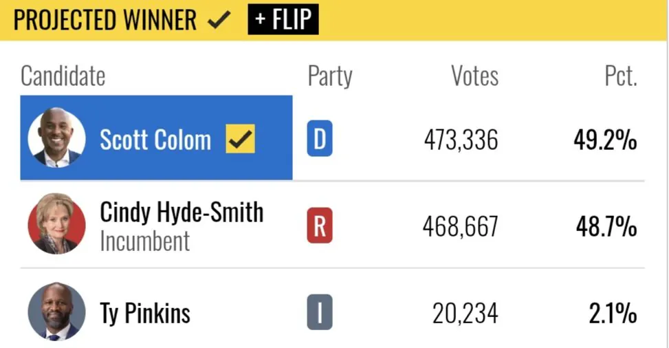

민주당 소속 상원의원은 44년만
이 곳이 어떤 곳이냐면 공화당 극우 핵심 지역으로 유명하며 kkk단이 있던곳

민주당 소속 상원의원은 44년만
이 곳이 어떤 곳이냐면 공화당 극우 핵심 지역으로 유명하며 kkk단이 있던곳


히틀러가 2차 세계대전을 끝냈다고 히틀러한테 평화상을 줄 순 없잖아요..
아돌프에게 주자..
집값, 식료품값, 기름값 고물가가 이렇게 무서움
무능한 적은 최고의 아군이라고 했지
민주당 최고의 아군이 트럼프가 되버렸 ㅋㅋㅋ
괜히 시진핑핑이가 입닥치고 사는게 아니라니까?
ㅎㄷㄷ 하구만
3번 후보까지 합치면 차라리 흑인을 뽑고 만다 측이 과반수가 넘어버렸네
3번도 찾아보니까 민주당 계열 인사였나본데
거의 공화당을 만든 주 라고볼수있지않나
원래 민주당이 노예제 하고 그랬는데 민권법 찬성 이후로 공화당이 남부전략 하면서 스탠스 반대로 바꿔서 공화당 텃밭된거긴 함.
그래서 맨 마지막 민주당 상원의원이었던 사람도 (1988년 퇴임) 짐크로우 같은 오지게 인종차별적 정책 옹호하고 그런 인물임.
실질적으로 진보 포지션 잡힌건 150년전 남북전쟁이후 간선으로 뽑힌 흑인 상원의원이 마지막...
인종차별도 먹고 살만해야 하는거네
페미, PC, 인권 같은 소리도 먹고 살만해야 하는 것임.
먹고 살기 바쁜데 인권 따질 틈이 어딨냐.
등떠시고 배부르니 인종차별이니 뭐니 하는거지 아 ㅋㅋ
트럼프 >>> 대공황급
ㅋㅋㅋㅋㅋ
와 박빙이었네
밋시시피 수준 합격
"바이든은 이렇게 하지 못했을 것" 맞말됐네
정상화는 역시 신럼프
미국 대통합은 트황상 ㄷㄷ
근데 트럼프처럼 해도 48.7%라는 거잖아?
구조적으로 투표소 접근성을 엄청 불공평하게 한거도 있어서 점차 바꿔가야 할거긴 함.
민권법 위헌떠서 투표억압 법안, 특히 남부에 줄줄 발의되서 그렇습니다.
투표법안 수정을 할라면 연방법원에 사전승인을 받아야 한다는 조항 위헌 뜸 ㅋㅋㅋㅋ
ㅇㅇㅇ 그거땜에 이번에 흑인 투표층에서 역으로 투표의향이 극도로 올라간 면도 있어서 바꿔 나가야 하지 않나 싶음.
미국을 부수고, 미국을 새로 만든다. 그것이 트럼프레퀴엠
와 미시시피에서 흑인 당선은 ㄷㄷㄷㄷ
미국을 다시 위대하게 ㅋㅋㅋㅋㅋ
앨라바마랑 더불어서 양대 기독교 보수주의로 유명한 미시시피에서 흑인 민주당의원 당선은 진짜 놀랍네
민주당 흑인이 미시시피에서 당선되네마네
유튜브에서 말 많더만 ㄷㄷ 결국 해낸 트럼픜ㅋㅋㅋㅋ
여기도 그렇고 공화당이 너무 심하게 지는 바람에 오히려 공화당은 체질개선을 못하고 더 극우로 뭉치는 루트로 가게 됐음
미시시피는 진짜 의외네ㅋㅋㅋㅋㅋㅋ
저긴 우리나라로 치면 살짝 신안 이미지임 (정치성향은 반대) 촌에 교육 못받고 사촌들 간 결혼 있고.
쫌 늪지 많고 악어가 있는 앨라바마 느낌
ㅋㅋㅋㅋ 결국 이렇게 ㅋㅋ
대럼프 순수체급 도랏노 ㅋㅋㅋ
kkk가 그걸를찍게만드는 대럼프
캬 역시 인종차별을 끝낸 트황상 노벨평화상 안드리고 뭐하냐